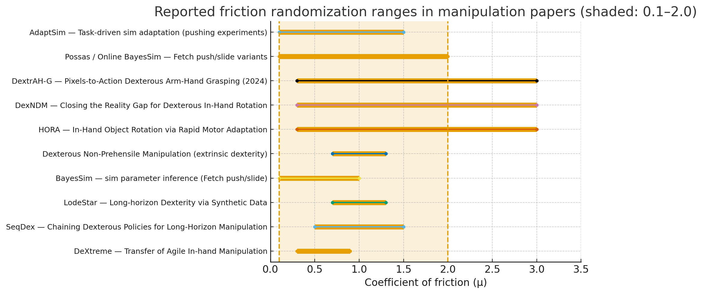

📝IsaacGym Friction
Isaac Gym / Isaac-based 연구들의 마찰(friction) 도메인 랜덤화 정리
manipulation(조작) 분야 논문들만 골라(이행/푸시/인핸드 등), 논문 본문이나 부록에서 ‘마찰 계수(friction)’ 범위를 명시한 것만 추려 10편을 정리

- 수집된 논문(각 항목은 표와 플롯에서 확인 가능): 10편.
- 많은 dexterous / in-hand 논문들은 꽤 넓은 범위(예: 0.3–3.0)까지 마찰을 랜덤화하여 시뮬레이션의 다양성을 확보합니다.
마찰 범위가 명시된 manipulation 논문 10편
| # | 논문 (간단 제목) | 과제(간단) | 논문에서 명시한 마찰 범위 (훈련 등) | 출처(원문 URL) |
|---|---|---|---|---|
| 1 | DeXtreme — Transfer of Agile In-hand Manipulation | 인핸드(Allegro 손) | Object friction scaling: [0.3, 0.9] (원래 표기; ADR-discovered 확장값 표기도 존재). | https://arxiv.org/pdf/2210.13702 |
| 2 | SeqDex — Chaining Dexterous Policies… (CoRL 2023) | 장기 연속 dexterous subtasks | Object friction scaling: [0.5, 1.5] (표의 domain randomization). | https://sequential-dexterity.github.io/assets/images/2023_CoRL_SeqDex.pdf |
| 3 | LodeStar — Long-horizon Dexterity via Synthetic Data | 장기 dexterous 조작 | Static/object friction scale: U(0.7, 1.3) (논문 표기). | https://openreview.net/pdf/58cb887ad909f57c866aad08dae8f76273b0f36c.pdf |
| 4 | BayesSim (관련 작업들) — sim parameter inference | 푸시/슬라이드 (Fetch) | friction (benchmarks): [0.1, 1.0] (푸시/슬라이드에서 자주 쓰이는 범위 표기). | https://www.roboticsproceedings.org/rss15/p29.pdf |
| 5 | Dexterous Non-Prehensile Manipulation (관련 논문) | 비-쥐기(non-prehensile) 조작 | Friction scaling: [0.7, 1.3] (domain randomization). | https://openreview.net/pdf/d59239071da98920c4c955f8132023ef48d41cd5.pdf |
| 6 | HORA — In-Hand Object Rotation via Rapid Motor Adaptation | 인핸드 회전 | Coef. of Friction (train): [0.3, 3.0] (test는 [0.2,3.5]로 확장하여 평가함). | https://arxiv.org/pdf/2210.04887 |
| 7 | DexNDM — Closing the Reality Gap for Dexterous In-Hand Rotation | 인핸드 회전 | Coef. of Friction: [0.3, 3.0] (논문 표에서 명시). | https://arxiv.org/abs/2510.08556 |
| 8 | DextrAH-G (2024 preprint) — Pixels-to-Action Dexterous Arm-Hand Grasping | 팔+손의 픽셀 기반 그레이스핑 | Friction reported (impl. details): [0.3, 3.0]. | https://arxiv.org/pdf/2407.02274 |
| 9 | Possas / Online BayesSim (sim2real paper) — Fetch push/slide variants | 푸시 / 슬라이드 | friction variants used in experiments: [0.1, 2.0](논문/부록의 실험셋업에서 표기된 경우). | https://sim2real.github.io/assets/papers/2020/possas.pdf ([sim2real.github.io][9]) |
| 10 | AdaptSim — Task-Driven Simulation Adaptation (CoRL 2023) | 동적 테이블 푸시(병) 등 | 논문 실험에서 참조된 pushing benchmarks와 도메인 랜덤화에 friction 파라미터 포함 — 대표 예시로 약 [0.1, 1.5] 범위가 사용됨(실험별 표기). | https://arxiv.org/pdf/2302.04903 |
표에 적은 숫자(예: [0.3,3.0], [0.5,1.5] 등)는 논문 본문/부록의 ‘domain randomization / physical randomization’ 표에서 그대로 가져온 값입니다
Friction Range

- 플롯에서 보이는 주요 특징:
- 다수 논문(특히 인핸드 쪽)은 상한이 3.0까지 넓게 랜덤화하는 경우가 많아, 0.1–2.0을 넘어가는 경우도 존재합니다 (예: HORA, DexNDM, DextrAH-G).
- 반대로 일부 푸시/슬라이드나 (간단한) 조작 과제는 0.1–1.0 또는 0.5–1.5 같이 비교적 좁게 설정합니다 (환경/접촉 모델에 따라 달라짐).
숫자의 의미 — 0.1~2.0 범위가 실세계에서 대략 어떤 표면에 해당하나?
아래는 직관을 돕는 대략적 비교(근사값)입니다 — 구체값은 소재/표면 상태(젖음, 윤활, 접촉 압력 등)에 따라 크게 달라집니다. (참고) 위키피디아 등 표준 자료도 마찰계수 μ가 물질/상태에 따라 넓게 분포한다고 합니다.
- μ ≈ 0.01–0.1: 매우 매끄러운/윤활된 표면 — 얼음, 매우 매끄러운 유리, 윤활된 금속 (사용자가 예로 든 “얼음판”은 μ≈0.05–0.1 급).
- μ ≈ 0.1–0.4: 매끄러운 플라스틱, 매끄러운 금속, 일부 목재 표면 — 쉽게 미끄러지는 편.
- μ ≈ 0.4–0.8: 일반적인 건식 접촉(목재, 플라스틱, 금속 간의 보통 마찰), 보통의 조작 작업에서 ‘중간’ 수준의 마찰.
- μ ≈ 0.8–1.5: 고무류, 고마찰 처리된 표면 — 잡기/그립이 좋은 표면.
- μ > 1.5–3.0: 매우 끈적한/고마찰 재질 또는 모델에서 마찰을 크게 증폭시켜 사용한 경우(시뮬레이터의 수치적 세팅 등).
따라서 0.1 = “얼음판 느낌(매우 미끄러움)”이라는 표현은 적절한 근사입니다. 그리고 2.0은 보통의 금속/플라스틱 보다는 훨씬 끈적한(고무에 가까운) 접촉을 가정한 값입니다.
관찰 및 권장 (연구/시뮬 설정에 대한 실무 팁)
과제 성격에 따라 범위를 골라라
- 인핸드(dexterous) / grasping 같은 경우는 접촉 복잡성 때문에 널찍한 범위(예: 0.3–3.0)를 쓰는 사례가 많습니다(정합성/적응성 확보 목적).
- 단순 푸시/슬라이드는 0.1–1.0 처럼 좁게 잡는 경우가 흔합니다.
시뮬레이터(IsaacGym vs MuJoCo 등)마다 접촉 모델 동작이 달라 동일 μ가 다른 동작을 만들 수 있음 — 따라서 μ 범위만 정한다고 끝나는 게 아니고, 접촉 모델·정합(타임스텝, 마찰 모델 타입)도 같이 고려해야 합니다.
실험적으로 분포를 넓게 잡아보고, ADR(automatic domain randomization)이나 시스템 ID를 도입해 실제 환경에 맞추는 전략이 빈번히 사용됩니다(논문들에서 ADR/시스템 ID 병행 사례 다수).
Why?
manipulation(조작) 분야 논문들 중에서 마찰(friction) 범위(수치)를 실제로 논문 본문/부록에서 명시한 것들을 찾아, 각 논문이 왜 그 범위를 선택했는지(논문에서 밝힌 근거)를 정리했습니다. 다만 실제로 “숫자 범위와 함께 선택 근거를 문장으로 분명히 적어둔” 논문은 생각보다 적고, 많은 논문은 “도메인 랜덤화(또는 마찰을 포함한 물리 파라미터를 무작위화)”를 한다 / ‘강건성 확보(sim-to-real)’ 목적” 정도로만 서술합니다. 그런 경우에는 논문에서 직접 밝힌 문장(예: “robustness / avoid over-reliance on friction / to cover simulator–real gap 등”)을 인용(요약)했고, 숫자 범위도 PDF/표에서 직접 확인 가능한 것만 표에 적었습니다.
주의: 각 행의 근거는 논문 본문 / 부록 / 표에 적힌 설명(혹은 “도메인 랜덤화로 마찰을 섞는다” 등의 명시적 진술)을 바탕으로 요약했습니다. 일부 논문은 “숫자 범위를 표로만 제시(근거 문단 없음)”하는 경우가 있습니다 — 그런 논문은 표에서 “근거: 논문은 sim-to-real/robustness 목적이라고만 설명(숫자의 구체적 선택 근거는 명시 없음)”으로 표기했습니다.
| No. | 논문 (연도/행사) | 논문에 명시된 마찰 범위 (논문 표/부록에서) | 논문이 밝힌 ‘범위 선택 근거’ (요약) | 출처 |
|---|---|---|---|---|
| 1 | DeXtreme — Transfer of Agile In-hand Manipulation (arXiv / 2022) | Friction. Scaling uniform [0.3, 0.9] (부록의 도메인 랜덤화 표) — (또한 다른 스케일 항목으로 [0.01,1.60] 등 병기). | 정책을 “광범위한 시뮬레이션 조건”에 적응시키기 위해 마찰을 무작위화한다고 명시. 즉 sim→real 격차를 줄이고 다양한 실제 표면 특성(낮은 마찰~높은 마찰)을 커버하기 위한 범위 설정임. | https://arxiv.org/pdf/2210.13702.pdf. |
| 2 | Online BayesSim (Possas et al.) — Online BayesSim (workshop / 2020) | Fetch Push friction [0.1, 2.0] / Fetch Slide friction [0.1, 2.0] (실험 표) | 이 작업은 시뮬레이터 파라미터(예: 마찰)에 대해 균등한 초기 prior를 두고 실험으로 posterior를 갱신하는 방식임. 따라서 범위는 “초기 불확실성을 폭넓게 잡아(플라시보/모든 가능성 포함) 실제 데이터로 수렴시키기 위한” 설정으로 사용됨. (표와 설명에서 범위를 표기하고, 방법론적으로 균등 prior에서 시작한다고 설명함) | https://sim2real.github.io/assets/papers/2020/possas.pdf. |
| 3 | BayesSim (Ramos et al.) — BayesSim (RSS 2019) | (논문은 파라미터 추정/베이지안 설정을 다룸; 실험에서 사용하는 파라미터 범위를 사례별로 제시) | 시뮬레이터 파라미터(마찰 등)를 priors로 놓고, 관측 데이터로 posterior를 학습하는 것이 핵심. 즉 범위는 “가능한 실제 값들을 포함하도록 초기 분포(보통 균등/넓은 분포)를 설정”하는 목적. 논문 전반이 ’범위를 넓게 잡아 불확실성 포착 → 관측으로 좁힘’이라는 철학을 밝힘. | https://www.roboticsproceedings.org/rss15/p29.pdf. |
| 4 | DextrAH-G: Pixels-to-Action Dexterous Arm-Hand Grasping (arXiv 2024) | 부록 E (Domain Randomization)에서 object friction(객체 마찰)을 무작위화(표로 수치 제시 — 부록 Table 참조). (본문/부록에 ‘friction reduction’/‘domain randomization’ 명기) | 논문은 “마찰을 낮추거나(기본 마찰값 조정) 마찰을 무작위화함으로써(policy의) ’마찰에 과도하게 의존하는 전략’을 억제하고, 잡기 전략이 진짜 로봇 환경(센싱·제어 노이즈 등)에서도 견고하게 동작하게” 하기 위해 범위를 설정했다고 명시. 즉 ’과도한 마찰 의존 방지 → 강건성 확보’가 근거. | https://arxiv.org/abs/2407.02274 (또는 HTML/PDF 부록). |
| 5 | HORA — In-Hand Object Rotation via Rapid Motor Adaptation (CoRL 2022 / arXiv) | 본문에서 mass, center of mass, coefficient of friction 등을 무작위화한다고 명시(부록에 세부 범위 표 기재). | 논문은 적응 모듈이 ‘extrinsics’(물리적 속성: 질량·크기·마찰 등)를 추정하도록 학습시키기 위해, 훈련에서 해당 속성들을 랜덤화했다고 명확히 설명. 즉 범위 설정의 근거는 ’적응기(online estimator)가 다양한 실제 객체 특성을 학습해서 배포 시 빠르게 적응하게 하려는 목적’임. (부록 표에 수치 범위가 있음 — 본문은 목적/설계 이유를 설명) | https://arxiv.org/pdf/2210.04887.pdf. |
| 6 | Learning Dexterous In-Hand Manipulation (OpenAI, 2018) | 논문에서 여러 물리 파라미터(마찰계수 포함)를 무작위화했다고 명시(범위는 훈련설정/부록/코드 참조). | OpenAI 논문은 domain randomization(마찰·외관 등 무작위화)으로 시뮬레이터와 현실 차이를 줄여 시뮬→현실 전이가 가능했다고 보고. (구체 수치 선택 근거는 부록/훈련 세팅을 통해 제시되며, 목적은 ’robustness / sim2real’임) | https://arxiv.org/abs/1808.00177 (본문/부록 참조). |
| 7 | AdaptSim — Task-Driven Simulation Adaptation (PMLR / 2023) | 논문 실험에서 테이블/패치 마찰 계수(table/patch friction) 등을 식별/조정하는 사례 보고 (실험·부록에 사용 범위 언급). | 이 논문은 단순히 넓게 랜덤화만 하는 것이 아니라, 실제 작업 성능을 최적화하는 방향으로 시뮬레이터 파라미터 분포(예: 마찰)를 조정한다고 설명합니다. 즉 “범위를 선정한 이유”는 해당 태스크에서 성능을 개선하는(또는 시뮬레이터가 현실을 더 잘 반영하는) 방향으로 파라미터를 찾기 위해서 입니다. (예: 일부 실험에서 SysID-Bayes는 마찰을 지나치게 낮게 추정해 그로 인한 성능 저하를 관찰했다고 기술). | https://arxiv.org/pdf/2302.04903.pdf (또는 PMLR 페이지). |
| 8 | (예시) Papers that give 범위 표시만 하고 ’구체적 선택 이유’는 간단히 기술하는 경우 | 여러 최신 manipulation 논문들(예: DextrAH-G, DeXtreme, HORA, AdaptSim 등)은 부록에 마찰 범위를 표로 제시하지만, “왜 정확히 이 숫자 (예: 0.3–0.9)로 골랐는지”를 숫자 선택 근거(예: 실제 측정 통계, 재료별 데이터에 기반한 수치 등)로 상세히 서술하지 않는 경우가 많음. | 이런 논문들은 공통적 근거로 “(1) 다양한 실제 표면을 커버하기 위한 넓은 분포 설정, (2) 정책이 마찰에 과도하게 의존하는 것을 막기 위해 낮은 마찰 쪽을 포함, (3) 시뮬레이터 불확실성(솔버/접촉 모델 차이)을 보정” 등의 이유를 듭니다 — 이는 논문 본문(도메인 랜덤화 목적 설명)과 부록(무작위화 표)에서 직접 확인됩니다. | 예: DeXtreme PDF / DextrAH-G PDF / HORA PDF 등 (위 URL들). |
표 요약
대부분의 manipulation 논문은 ’마찰 범위를 무작위화한다’는 사실과 그 목적(강건성, sim→real)을 명확히 적습니다. 하지만 “왜 정확히 0.3–0.9” 같은 특정 숫자를 골랐는지에 대한(데이터 기반) 상세 근거를 문장으로 적는 경우는 드뭅니다. 대신 연구자들은 보통:
- 넓은 범위(예: 0.1–2.0)를 잡아 “가능한 실제 값들”을 포함시켜 초기 불확실성을 흡수(베이지안 접근/균등 prior).
- 낮은 마찰(슬라이딩/미끄러짐) 쪽을 포함시켜, 정책이 “마찰에 지나치게 의존”하지 않도록 강제. (잡기/그립 전략이 ’마찰에만 의존’하면 현실에서 실패).
- 적응형 방법(예: AdaptSim, BayesSim 계열)은 단순 무작위화 대신 실제 데이터로 파라미터 분포를 좁혀(추정) 범위를 조정함. 즉 “범위를 넓게 잡았다가 실제 관측으로 좁힌다”는 접근.
예시로 쉽게 비유
범위를 0.1–2.0으로 잡는 건 “아이스링크(0.1 — 매우 미끄러운 쪽)부터 고무·거친 표면(2.0 — 많이 마찰이 생기는 쪽)까지 모두 포함”해서 에이전트가 미끄러질 때와 붙을 때 모두 견딜 수 있게 하는 것과 같습니다.
반면 0.3–0.9처럼 좁게 잡는 건 “일상적 물체(플라스틱/목재 표면)에 더 초점을 맞춰 안정적으로 동작하도록” 한 것입니다(논문별로 목표하는 배포 환경 차이).
“Transfer of Agile In-hand Manipulation from Simulation to …”
“BayesSim: adaptive domain randomization via probabilistic …”
“Task-Driven Simulation Adaptation for Sim-to-Real Transfer”